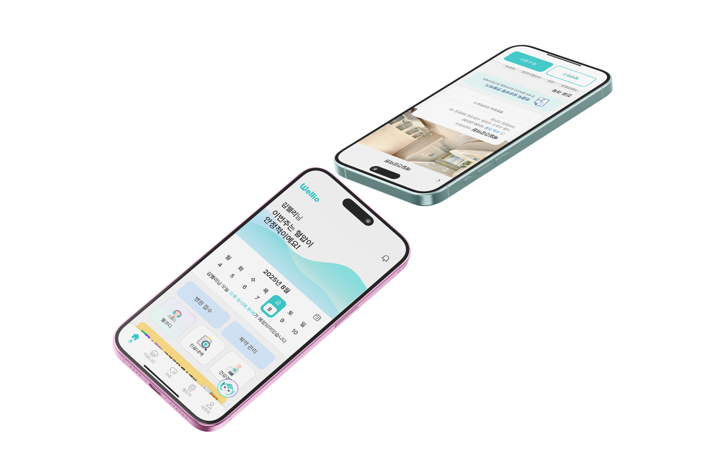

<div class="bg-wellio">
  <div class="bg-brita">
    <div class="frame-427318956">
      <div class="frame-427318954">
        <div class="back">Back</div>
        <div class="frame-427318953">
          <div class="frame-427318952">
            <div class="frame-2147238261">
              <div class="frame-2147238264">
                <div class="frame-427318937">
                  <div class="frame-2147238257">
                    <div class="_2025-10-20-11-21">2025.10 ~ 11</div>
                    <div class="side-project">SIDE PROJECT</div>
                  </div>
                  <div class="wellio">Wellio</div>
                </div>
                <div class="frame-2147238263">
                  <div class="adobe-apps">
                    
                    
                  </div>
                  
                  
                  
                </div>
              </div>
              <div class="frame-427318950">
                <div class="frame-427318946">
                  <div class="div">소속 | 역할</div>
                  <div class="ux-ui-designer">막시무스 | UX/UI Designer</div>
                </div>
                <div class="frame-427318947">
                  <div class="div">담당업무</div>
                  <div class="ia-user-flow-ux-ui">
                    사용자·시장 리서치 및 서비스 방향성 도출
                    <br />
                    페르소나 · IA · User Flow 설계
                    <br />
                    가족 건강관리 서비스 기능 및 화면 기획
                    <br />
                    디자인 시스템 및 주요 앱 화면 UX/UI 디자인
                    <br />
                    프로토타입 제작
                  </div>
                </div>
                <div class="frame-427318949">
                  <div class="div">기여도</div>
                  <div class="div2">
                    로그인·온보딩 플로우 및 화면 디자인 · 디자인 시스템 구축
                  </div>
                </div>
              </div>
            </div>
            <div class="frame-427318951">
              <div class="overview">Overview</div>
              <div class="ux-ui">
                가족의 건강 정보를 각자 관리해야 하는 불편함에서 출발해, 건강
                기록부터 병원 업무와 가족 간 소통까지 하나로 연결한 올인원 가족
                건강관리 앱 UX/UI 프로젝트입니다. 사용자 리서치와 서비스 구조
                설계를 바탕으로 가족 구성원이 서로의 건강 상태를 쉽고 지속적으로
                확인하고 관리할 수 있는 경험을 설계했습니다.
              </div>
            </div>
            <div class="div3">기획서 →</div>
          </div>
          <div class="frame-427318935">
            <div class="frame-427318957">
              
            </div>
            
            
            
            <div class="frame-1430106057">
              <div class="all-in-one">All-in-one 가족 건강 어플리케이션</div>
              
            </div>
            
            <div class="frame-1430106058">
              
            </div>
          </div>
        </div>
      </div>
    </div>
  </div>
</div>
